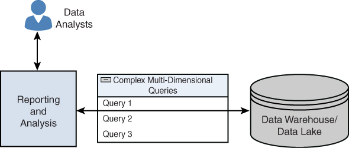
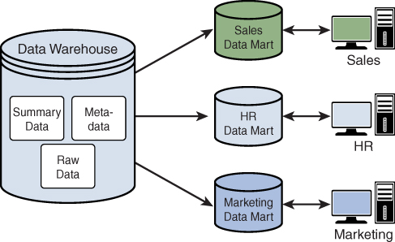

Big Data
Aunque parece que todo el mundo debe trabajar con cuantos más datos mejor, no todo es Big Data en el mundo tecnológico.
 Datos y más datos
Datos y más datos
Está claro que los datos son el petróleo del siglo XX, tal como dijo Clive Humby en el 2006, y que se puede obtener mucho valor si almacenamos y sabemos extraer información precisa de "nuestros" datos. Sin embargo, ya en la década del 2020, los datos per se no son suficientes si no que debemos conocerlos y cuidarlos.
Pero el adjetivo Big implica cantidades ingentes, dicho de otro modo, cantidades de datos que una de nuestras máquinas no puede gestionar y necesita de la computación distribuida y plataformas como el cloud para su almacenamiento y gestión. Es probable que con soluciones de Small Data podamos cubrir gran parte de los problemas que requieren nuestra industria más cercana. Eso sí, muchas de las técnicas y destrezas asociadas a la ingeniería de datos no son únicas de grandes volúmenes de datos con arquitecturas distribuidas, sino que, podemos llevárnoslas a nuestros desarrollos a menor escala para automatizar y poner los datos por delante de nuestras empresas y aplicaciones.
Pero antes de entrar en harina, retrocedamos en el tiempo.
Hablemos de V
V fue un fenómeno en los 80 como serie de ciencia ficción, pero relacionado con el Big Data, dependiendo de la literatura, tenemos las 3V del Big Data, las 5V, las 7V...
En los inicios, para saber si hablábamos o no de Big Data, nos teníamos que preguntar si cumplían con las 3V:
- Variedad: en relación a las fuentes, formas y tipos. Por ejemplo, pueden ser:estructurados, como tablas de una base de datos relacional o ficheros de texto o semiestructurados como los documentos JSON. Incluso almacenar datos no estructurados como correos electrónicos, imágenes o audios.
- Volumen: Entendida como la cantidad de datos procesados y almacenados. A día de hoy probablemente superior al orden de TB de datos y que para su procesamiento, superan la memoria RAM de nuestros sistemas.
- Velocidad: el tratamiento que realizamos sobre los datos, en ocasiones cercano al tiempo real o con unos tiempos de recolección, procesamiento y almacenamiento finitos y claramente definidos.
Luego se añadieron un par más, haciendo un total de 5V:
- Valor: "Lo que importa, son los datos importantes", los que aportan valor, transformando datos en información, y a su vez, en conocimiento que facilita la toma de decisiones.
- Veracidad: Debemos asegurar que los datos que tenemos son reales y no contienen datos erróneos, es decir, que son fiables. Se dedica un esfuerzo importante en explorar y validar los datos para que la analítica realizada sea veraz.
Y por último, otras dos hasta llegar a las 7V:
- Viabilidad: Es necesario saber la capacidad que tiene una empresa para realizar un uso eficaz de los datos, cuestionarse qué y cuántos datos se necesitan para predecir los resultados más interesantes para la empresa.
- Visualización: Necesitamos poder representar los datos, ya sea de manera visual mediante gráficos o codificados en indicadores (KPI) para hacer que sean legibles y accesibles.
 Las 7 V del Big Data
Las 7 V del Big Data
Claramente, para los departamentos de marketing, Big Data se escribe con V.
Hablemos de analíticas
Mientras que las aplicaciones Big Data recogen información desde múltiples fuentes de entrada, el concepto de inteligencia de negocio (business intelligence) se centra en el uso que hace la empresa de dichos datos, es decir, coge los datos y los transforma en conocimiento para la ayuda en la toma de decisiones en base a los datos analizados.
Las herramientas de Business Intelligence (BI) son aplicaciones de soporte de decisiones que permiten en tiempo real, acceso interactivo, análisis y manipulación de información crítica y así ser capaces de generar conocimiento mediante el análisis de la información ya almacenada, es decir, realizando analítica descriptiva (¿Qué sucedió?) y diagnóstica (¿Por qué sucedió?).
Con la ayuda del Big Data y la IA, podemos afrontar analíticas más avanzadas, como son la analítica predictiva (¿Qué pasará?) y prescriptiva (¿Cómo podemos prevenir? ¿Qué debería suceder?) para establecer tendencias, averiguar por qué suceden las cosas y hacer una estimación de cómo se desarrollarán las cosas en el futuro.
La ciencia de datos
La ciencia de datos incluye una serie de métodos para analizar tanto pequeños conjuntos de datos como cantidades enormes. Aunque no exista una proceso claramente definidos, podemos identificar los siguientes pasos:
- Establecer el objetivo de la investigación: todas las partes interesadas entienden el qué, el cómo y el por qué del proyecto y se crea un project charter o acta de constitución del proyecto.
- Recuperación de datos: búsqueda de los datos, ya sean internos o externos a la empresa. El resultado son datos en bruto que seguramente habrá que limpiar y transformar antes de poder utilizarlos.
- Preparación de los datos: necesitamos transformar los datos para que sean utilizables por los modelos, detectando y corrigiendo los diferentes tipos de errores, combinando datos de diversas fuentes.
- Exploración de datos, para obtener un conocimiento profundo de los datos, buscando patrones, correlaciones o desviaciones, normalmente, mediante técnicas visualizar y descriptivas
- Modelado: creación de modelos, en ocasiones basados en IA, para obtener la información o realizar las predicciones indicadas en el acta de constitución del proyecto.
- Presentación y automatización: Con la presentación de los resultados obtenidos y su comprobación, es probable que se entre en un ciclo iterativo que provoque volver al paso 2 con datos nuevos y requiera automatizar todos el proceso.
Al final estos pasos se trasladan al ciclo de vida del dato que estudiaremos en la siguiente sesión.
Almacenando los datos
Dentro del ecosistema de los datos, en sus diferentes etapas, y de manera consistente es necesario utilizar diferentes sistemas de almacenamiento. Además de las conocidas bases de datos relacionales, ya sea MariaDB, Postgres u Oracle, se utilizan sistemas NoSQL como MongoDB, Redis o Cassandra, o incluso bases de datos para consultas como ElasticSearch.
Aviso a navegantes
El campo del Big Data es enorme, con una cantidad de herramientas y tecnologías que es imposible dominarlas todas. Dicho esto, a lo largo de las diferentes sesiones iremos destacando y trabajando aquellas que nos aportan una visión más completa y tienen una alta aceptación en el mercado.
Dentro del almacenamiento y procesamiento de datos, existen dos modelos predominantes: el procesamiento de transacciones en línea (Online Transaction Processing - OLTP) y el procesamiento analítico en línea (Online Analytical Processing - OLAP). Ambos modelos son fundamentales para la gestión y análisis de datos, pero tienen enfoques y objetivos diferentes.
OLTP
Cada vez que utilizamos un sistemas transaccional, estamos utilizando OLTP. Al pagar con tarjeta en una tienda, al reservar un billete de avión o al retirar dinero de un cajero automático, estamos interactuando con un sistema OLTP. Estos sistemas están diseñados para gestionar y procesar transacciones en tiempo real, asegurando que las operaciones se completen de manera rápida y eficiente.
Los sistemas OLTP son esenciales para las operaciones diarias de muchas organizaciones, ya que permiten la gestión eficiente de grandes volúmenes de transacciones concurrentes. Estas transacciones suelen ser cortas y simples (lo que normalmente implica que sean en tiempo real), como insertar, actualizar o eliminar registros en una base de datos.
Además, están diseñado específicamente para procesar datos centrados en transacciones en una base de datos, permitiendo un gran número de transacciones simultáneas en tiempo real. Es importante señalar que los almacenes de datos OLTP adoptan un enfoque de «todo o nada», es decir, las transacciones se realizan con éxito o fracasan, y no permanecen en un estado intermedio.
 Elementos en un OLTP
Elementos en un OLTP
Es muy importante que las transacciones se desarrollen según lo previsto y que no haya contratiempos, ya que cualquier problema transaccional (incluida la corrupción o la inconsistencia de los datos) puede dar lugar a resultados indeseables. Los almacenes de datos OLTP ofrecen fiabilidad y consistencia mediante la implementación del principio de diseño ACID.
ACID
Las propiedades ACID son:
- Atomicidad: La transacción es indivisible. Esto quiere decir, que o se ejecutan todas las sentencias o no lo hará ninguna.
- Consistencia: Después de una transacción, la base de datos estará en un estado válido y consistente.
- Aislamiento (Isolation): Cada transacción está aislada del resto de transacciones y el acceso a los datos se hace de forma exclusiva. Si una transacción quiere acceder de forma concurrente a los datos que están siendo utilizados por otra transacción, no podrá hacerlo hasta que la primera haya terminado.
- Durabilidad: Los cambios que realiza una transacción sobre la base de datos son permanentes.
Para ello, se utilizan controles de concurrencia para garantizar que se mantenga la consistencia.
Todas las soluciones basadas en RDBMS que estamos acostumbrados a utilizar en nuestro día a día, como MySQL/MariaDB, PostgreSQL o MongoDB, son sistemas OLTP.
OLAP
Mientras que OLTP se centra en la gestión de transacciones en tiempo real, OLAP está diseñado para el análisis y la recuperación de datos en línea, procesando grandes volúmenes de datos procedentes de almacenes de datos, fuentes de datos externas o cualquier otro almacén de datos centralizado, y son importantes en los procesos de business intelligence y minería de datos.
Si pensamos en un escenario empresarial, OLAP es fundamental para la toma de decisiones estratégicas basadas en datos históricos. Si nuestra empresa quiere lanzar un nuevo producto al mercado, necesitará analizar los datos históricos de ventas, tendencias del mercado y comportamiento del consumidor para tomar decisiones informadas sobre el diseño, la comercialización y la distribución del producto. Por ejemplo, si el año pasado se lanzó un nuevo producto y estamos a punto de lanzar una nueva versión, ¿cómo sabemos si el producto anterior tuvo éxito en el mercado y cómo le fue frente a la competencia? ¿Cómo identificamos los patrones de demanda? ¿Cómo identificamos las opiniones de los clientes? Estos datos, probablemente, ya los tengamos disponibles, por separado, en sistemas ERP y CRM, pero no están unificados en una única fuente de información veraz.
La idea detrás de OLAP es profundizar en la información histórica y buscarle un sentido a los datos con el fin de respaldar decisiones futuras y crear una estrategia a corto y largo plazo desde un punto de vista empresarial, en lugar de desde una perspectiva informática.
Los sistemas OLAP se utilizan para diversas analíticas, como la diagnóstica, la predictiva y la prescriptiva. A diferencia de los sistemas OLTP, en los que los conjuntos de datos no son tan grandes, los sistemas OLAP ejecutan consultas complejas en grandes bases de datos multidimensionales y lagos de datos.

Elementos en un OLAPLos principios fundamentales de OLAP son:
- Admite vistas conceptuales multidimensionales de conjuntos de datos, permitiendo a los usuarios analizar datos desde múltiples perspectivas (podemos girar y cortar losdatos como si de un cubo se tratara), como pueden ser por tiempo, geografía, producto, etc.
- Actúa como capa intermedia entre un almacén de datos y una interfaz, como un traductor inteligente que convierte las consultas de los usuarios en consultas optimizadas para el almacén de datos.
- Uso de representaciones avanzadas, como cubos 3D (por ejemplo, producto × región × tiempo), tablas dinámicas (igual que en Excel) y tablas cruzadas (por ejemplo, productos en filas, meses en columnas).
Comparando OLTP y OLAP
Para entender mejor las diferencias entre OLTP y OLAP, veamos la siguiente tabla comparativa:
| Característica | OLTP | OLAP |
|---|---|---|
| Casos de uso | Es un sistema de transacciones en línea destinado principalmente a transacciones simultáneas. | Es un proceso de análisis y recuperación de datos en línea que se utiliza para el análisis de datos. |
| Capacidad de procesamiento | Gran número de transacciones en línea cortas. | Gran volumen de datos. |
| Tipos de consultas | Consultas estándar y sencillas, como consultas de inserción, eliminación y actualización. | Consultas multidimensionales complejas que implican funciones de selección. |
| Perfiles de usuario | Personal operativo, como empleados administrativos y cajeros. | Analistas de negocios e ingenieros de datos. |
| Tipo de datos procesados | Datos transaccionales actuales. | Datos históricos. |
| Tiempo de respuesta | Del orden de milisegundos. | De unos pocos segundos a minutos. |
| Copias de seguridad | Completas e incrementales. | No son habituales |
Por último, es importante saber que OLTP y OLAP no son sistemas que compiten entre sí, sino que son sistemas complementarios. Normalmente, una organización tiene datos transaccionales y datos por lotes que se someten a análisis y generación de informes. Si bien desde el punto de vista de las transacciones comerciales OLTP es clave, el análisis de los datos es un aspecto de OLAP, y aquí es donde los dos sistemas se unen para ofrecer una visión holística de los procesos organizativos que conducen a conocimientos empresariales y se retroalimentan en el proceso para una mejora continua.
 OLTP y OLAP son sistemas complementarios
OLTP y OLAP son sistemas complementarios
Para la integración de OLTP y OLAP, se utilizan procesos ETL (extraer, transformar y cargar) para transferir datos desde los sistemas OLTP a los almacenes de datos/lagos de datos utilizados por OLAP.
Data Warehouse
Las empresas que han trabajado con datos en los últimos años, normalmente, centralizaban toda su analítica en un Data Warehouse, el cual integra todos los datos de los que dispone la empresa para después aplicar inteligencia de negocio y extraer información, etc... Es decir, es la centralización de todos los datos en una misma base de datos OLAP cuyo objetivo es obtener valor contrastado para la toma de decisiones basada en datos históricos.
Es fundamental tener en cuenta que un data warehouse sólo admite datos estructurados y esquemas bien definidos, soportando un enfoque schema-on-write que sigue un esquema predefinido para los datos, los cuales se obtienen desde múltiples fuentes.
Sus principales funciones son:
- Extracción de datos
- Limpieza (cleansing) de datos
- Transformación de datos
- Carga / Recarga de los datos
Los datos dentro de un data warehouse son de sólo lectura, ya que las operaciones CRUD se realizan en los orígenes, dentro de sistemas OLTP. Para ello, se realizan procesos batch para permitir la analítica.
Componentes
Los datos de los almacenes de datos, los cuales ya hemos dicho que son datos estructurados y procesados, se obtienen de procesos ETL y pueden aprovecharse mediante consultas y herramientas de minería de datos.
Así pues, un data warehouse consta de los siguientes componentes principales:
 Componentes de un Data Warehouse
Componentes de un Data Warehouse
- Fuentes de datos: La fuente de datos que se va a procesar y analizar; los datos suelen ser datos OLTP.
- Herramientas ETL: Las herramientas de extracción, transformación y carga (ETL) se utilizan para extraer datos de las fuentes de datos y limpiarlos, así como transformarlos antes de cargarlos en el almacén de datos.
- El almacén de datos en sí, que almacena los datos procesados y estructurados para su análisis, normalmente en un formato optimizado para consultas OLAP.
- Herramientas de consulta: Herramientas como las de consulta y elaboración de informes, así como aplicaciones de minería de datos, permiten a los usuarios analizar los datos e interactuar con un almacén de datos.
- Análisis e informes: Los usuarios pueden aprovechar los informes para impulsar la toma de decisiones.
Ventajas y desventajas
| Ventajas | Desventajas |
|---|---|
| Permiten un acceso rápido a datos y metadatos críticos. | Como los almacenes de datos se basan en RDBMS, no se pueden almacenar datos no estructurados en ellos. |
| Integran datos de múltiples fuentes. | Es difícil alterar los tipos de datos y el esquema de la fuente de datos, ya que los almacenes de datos solo pueden ingestar datos estructurados que se ajusten a esquemas predefinidos. |
| Reducen el tiempo de respuesta en el proceso de análisis de la información. | Los almacenes de datos no son adecuados para aplicaciones en tiempo real, ya que los datos se cargan en lotes. |
| Permiten a los usuarios analizar datos de diferentes períodos de tiempo para realizar predicciones futuras. | |
| Proporcionan información coherente gracias a su dependencia de los RDBMS. |
Finalmente, algunos ejemplos comunes de soluciones Data Warehouse son:
Data Mart
Se trata de un tipo específico de Data Warehouse que se centra en un área funcional o departamento específico dentro de una organización, como ventas, marketing o finanzas. Un data mart es una versión más pequeña y especializada de un almacén de datos que está diseñado para satisfacer las necesidades específicas de un grupo particular de usuarios.
Por ejemplo, un departamento de ventas podría utilizar un Data mart de ventas para conocer los detalles de las estadísticas de ventas relacionadas con un producto recién lanzado. Ningún otro departamento tendría acceso al Data mart de ventas.

DataMarts en un Data WarehouseA su vez, los data marts pueden clasificarse en tres categorías según el origen de los datos, ya sean dependientes (obtienen todos los datos a partir de un data warehouse principal), independientes (creados sin utilizar el almacén de datos de la empresa mediante procesos ETL propios) o híbridos.
Data Lake
Con la llegada del Big Data y la necesidad de almacenar muchos más datos y muchos de ellos sin una estructura clara, surge un nuevo enfoque conocido como Data Lake o lago de datos. En estos sistema, se guarda el dato en crudo (archivos JSON, imágenes, audios, vídeos, textos de correos electrónicos, documentos PDF,...), y sobre estos datos, se realizan diversas transformaciones y se vuelven a almacenar en el lago de datos.
Así pues, es un tipo de repositorio que almacena conjuntos grandes y diversos de datos sin procesar en su formato original y que mantiene una perspectiva general de éstos.
 Lago de datos
Lago de datos
Para ello, necesitamos sistemas de almacenamiento distribuido que sean fácilmente escalables, dado que estos lagos no paran de crecer. La solución on-premise de HDFS basada en Hadoop está dejando paso a las plataformas cloud con sistemas como AWS S3 a Azure Blog Storage. Estas soluciones están facilitando la creación de lagos de datos en contraposición de los data warehouse que venían reinando dentro del Business Intelligence.
Si unimos el concepto de data lake y el de data warehouse obtenemos un data lakehouse, con implementaciones como Databricks o Snowflake como puntas de lanza de la explotación de datos a gran escala. En el bloque de Spark, y en concreto cuando utilicemos DeltaLake profundizaremos en estos conceptos.
Roles
Dentro del mercado de Big Data trabajan diferentes profesionales en equipos multidisciplinares. Entre las diferentes personas, podemos destacar los siguiente roles:
- Analista de datos: Transforma los datos en información. Perfil técnico que conoce el negocio. Realiza un análisis más tradicional de los datos, los transforma y los interpreta con el objetivo de dar respuesta a los retos propuestos desde la inteligencia de negocio, normalmente mediante SQL y alguna herramienta de visualización de datos.
- Científico de datos: A priori, aunque tuvo su ola como la profesión más sexy y durante un tiempo la más deseada, a día de hoy es un perfil demandado por su escasez, dada su complejidad. Su función es similar a la del Analista de datos pero su rol se centra en la aplicación de modelos de IA sobre los datos disponibles en la empresa. Son perfiles con una base matemática y estadística alta, que conoce los diferentes modelos de IA disponibles y tiene destreza para trabajar con los datos y extraer información y convertirla en conocimiento.
- Ingeniero de datos: Es el perfil más técnico y en el que cuadra más con nuestro alumnado de FP. Profesional enfocado en el diseño, desarrollo y mantenimiento de los procesos necesarios para la extracción, carga, almacenamiento y procesamiento de los datos (ETL). Debe tener conocimiento sobre los conceptos de ingeniería del software, cloud y los diferentes sistemas de almacenamiento. Este perfil y su trabajo lo estudiaremos en profundidad en la sesión sobre Ingeniería de datos.
- Arquitecto de datos: Define la infraestructura necesaria para la gestión de grandes volúmenes de datos que no pueden ser tratados de manera convencional. Se encarga de definir la estrategia que se aplicará con respecto a la escalabilidad, gobernanza, linaje y seguridad de los datos. En una proxima sesión, estudiaremos las diferentes Arquitecturas Big Data.
Un arquitecto de datos define las herramientas y la arquitectura en la que se almacenarían los datos, mientras que un ingeniero de datos utiliza esta arquitectura para almacenar y transformar los datos para que a continuación, el científico de datos extraiga conocimiento de ellos.
Casos de Uso
Si nos centramos en qué uso se le da hoy en día al Big Data, por citar algunos, sería:
- La industria 4.0 se basa en gran medida en almacenar grandes cantidades de datos provenientes de sensores IoT.
- Las operadores de streaming con sus motores de recomendaciones y trazabilidad de la navegación del usuario se basan en guardar todos los eventos generados al navegar y utilizar sus servicios.
- Las aplicaciones de mapas que nos recomiendan diferentes rutas en base al tráfico actual lo hacen a partir de los datos de todos los conductores, tanto del histórico como de los presentes.
- Las redes sociales son, en parte, la cuna del Big Data y fuente de los últimos modelos generativos que requieren de mucha información para su entrenamiento. Además, como fuente de publicidad, es muy común realizar un análisis de sentimiento de los mensajes de los usuarios a modo de termómetro del lanzamiento de un producto o sondeo de la población.
Referencias
- Introducing Data Science: Big data, machine learning, and more, using Python tools - Davy Cielen, Arno D. B. Meysman, and Mohamed Ali
Actividades
-
(RABDA.1 / CEBDA.1a / 1p) Contesta a las siguientes preguntas justificando tus respuestas:
-
Desde tu punto de vista, ¿Qué V de las relacionadas con Big Data consideras más importante?
- En tu día a día, ya sea desde una perspectiva personal o profesional, ¿Qué herramienta / servicio / tecnología basada en Big Data hace tu vida más fácil y ya no podrías vivir sin él/ella?
-
(RABDA.1 / CEBDA.1a / 1p) Una empresa de comercio electrónico tiene los siguientes requisitos:
-
Procesar pagos con tarjeta en tiempo real
- Analizar tendencias de ventas de los últimos 5 años
- Generar informes mensuales de comportamiento del cliente
- Gestionar el inventario en tiempo real
- Identifica qué operaciones corresponden a OLTP y cuáles a OLAP, justificando tu respuesta.
- Propón una solución de almacenamiento para cada tipo de operación, explicando por qué es adecuada para cada caso.
-
(RABDA.1 / CEBDA.1a / 1p) A partir del mapa de herramientas que muestra Matt Truck con su landscape en https://mad.firstmark.com/, localiza las siguientes herramientas/tecnologías, y anota a qué categoría pertenecen y el nombre de otra herramienta de su/s misma/s categoría:
-
AWS S3
- Databricks
- Microsoft Power BI
- AWS Redshift
- Apache Kafka
- Apache Airflow
- MongoDB
Te puede resultar más cómodo buscar en https://mad.firstmark.com/card.
Contenido e imágenes de Big Data, por Aitor Medrano, reproducidos bajo licencia CC BY-NC-SA 4.0.